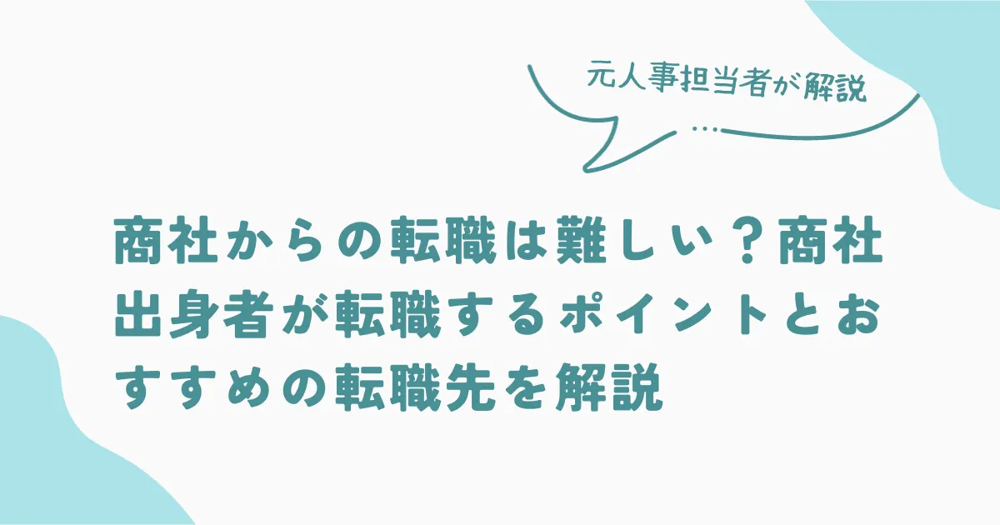

商社からの転職は難しい？商社出身者が転職するポイントとおすすめの転職先を解説

こんな人におすすめ
- 商社での働き方に不満を感じている
- 新たなキャリアチャンスを探している
- より充実した職場で働きたい
現在、商社で働いているが「働き方が合わない」と感じ、新しい環境でのスタートを考えている人もいるのではないでしょうか。確かに、商社は他の業種に比べ激務だと言われているので、転職したい気持ちは理解できます。
しかし、商社からの転職は慎重に考えなければなりません。
この記事では、商社から転職する際のポイントやおすすめの転職先を解説します。最後まで読めば、自分にあった転職先を見つけられるので、ぜひ参考にしてください。
商社から転職したい理由や背景とは
商社は年収が高い業界として知られており、知名度のある企業が多く新卒の学生にも人気があります。企業規模が大きく給与も他業界と比べて高めで、福利厚生も充実している会社がほとんどです。しかし、そのような業界にいながら、なぜ転職を考えるのでしょうか？
商社から転職したい主な理由は次の5つがあります。
- 激務でつらい
- 転勤が多い
- キャリアアップしたい
- 専門的な知識が身につかない
- 希望する部署に配属されない
順番に解説するので、当てはまる項目がないかチェックしてみてください。
激務でつらい
商社を辞めたい理由の多くは「仕事が激務だから」です。商社は国際的な取引やビジネスに携わることが多く、海外との時差や取引先の都合に応じて長時間拘束されるケースがあります。また、プレッシャーもかかりやすい仕事です。長時間労働や頻繁な出張などで、体力的・精神的に疲れを感じる人も少なくありません。
休日も得意先のイベントに顔を出すなど、満足に休めない日も多くあります。
 まつお
まつお商社は限界を感じて退職を決意する人が多い業界です。
転勤が多い
規模が大きい企業の会社員であれば転勤はつきものですが、一般的に商社は海外勤務も含めて転勤が多い業界のひとつです。一旦赴任するといつ帰って来れるかの保証はありません。赴任先や期間などの希望は聞いてもらえることが少ないため、ライフプランが立てづらくなります。
このように、長期的な計画を立てられないことも退職理由のひとつです。
まつお急な海外赴任を命じられるケースもあります。
キャリアアップしたい
やりたいことがあって入社したものの、希望の部署に配属されるケースは少ないです。行きたい部署に配属異動を希望してもなかなか受け入れられることはありません。しかも、商社は「年功序列制度」が根強く残っており、昇進や部署を任されるまでには時間がかかることも少なくありません。
そのため、キャリアアップしたいと考える人は「やりたいことを叶えるため」に転職を決意する人もいます。
まつおどちらかというと、古い体質の傾向です。
専門的な知識が身につかない
商社で身につく能力の多くは、営業スキルやコミュニケーション能力など汎用性の高いスキルです。その分、一般的な企業からは高い評価を受けられますが、専門知識を身につけたい人にとっては物足りないと感じるでしょう。
そのため「自分の力だけで生きていける力を身につけたい」と考える人は、専門知識が身につく業界への転職を考える人もいます。
まつお大企業は特に分業制が進んでおり、業務は限られています。
希望する部署に配属されない
面接のときに希望を聞かれるケースはありますが、必ずしも希望部署に配属されるとは限りません。むしろ、配属先は希望通りにならないことがほとんどです。ましてや、部門や支店が多く存在する商社では、希望通りの配属先にならない可能性はより高くなります。
しばらくしても希望の配属先に異動できない場合「自分がやりたいことを実現したい」との思いが強くなり、転職を考える人も少なくありません。
まつお規模が大きい企業ほど、このような傾向があります。
商社からの転職は難しいのか

商社からの転職については、正直、簡単だとは言えません。なぜなら、多くのスキルを習得できる一方で、専門的な知識が身につきにくいためです。しかし、商社だからこそ身につく能力は評価される傾向にあります。
商社出身者の強みと転職難易度を解説します。
商社出身者の強み
商社では専門的な知識は身につきにくいものの、他業界に比べて汎用性の高いスキルは身につきやすい業界です。
たとえば、「営業力」や「交渉力」が挙げられます。営業力や提案力はあらゆる業界で必要となるスキルであり、商社出身者は他業界の人に比べて優れています。また、語学力も評価の高いスキルのため、外資系企業や海外取引を行っている企業で活躍できるでしょう。
まつお一般的に、商社出身者は転職に有利です。
商社からの転職難易度（年齢別）
一般的に、商社で長くキャリアを積むほど、同業他社や商社以外の転職が難しくなります。理由は、年収の上がり幅が大きいため、年収が上がってからの転職は大幅な収入ダウンになる可能性があるからです。
| 年齢 | 年収 | 転職難易度 |
| 20代 | 700万円〜1,000万円 | 低 |
| 30代 | 1,300万円〜1,700万円 | 中 |
| 40代 | 1,500万円〜2,500万円 | 高 |
20代は第二新卒として、ポテンシャル採用している企業は多くありますが、30代になると実績や経験が求められます。
まつおしたがって、転職は入社5-6年目までが有利です。
商社出身者の市場価値やアピールポイント
転職市場において、商社出身者は汎用的なスキルが高く、どの業界においても評価される傾向にあります。
具体的に評価されるポイントは以下のようなスキルです。
語学力の高さ
英語などの外国語を話せる人材は評価されます。外資系企業ではなくても、海外の留学生を受け入れることや海外のお客様を相手にする業界など、語学力はどの業界においても重宝されることが一般的です。
特に海外での勤務経験がある人なら、海外との取引などを行っている企業では貴重な人材となるでしょう。企業にとって、ビジネスレベルの会話ができる人材を探すのはとても大変です。
営業スキルがある
商社で身につくスキルで一番大きいのは「営業スキル」です。
新商品を販売するために国内外を問わず、駆け回って交渉する行動力は他の業界にはない、高いレベルのスキルを身につけられます。
コミュニケーション能力が高い
傾聴能力は仕事をする上で重要なスキルです。
たとえば、得意先のニーズを聞き出し迅速に提案するなどのスキルは、特に営業職においては必須だと言えます。商社出身者は高い傾聴力を持っている人が多く、コミュニケーション能力が高いことが特徴的です。
商社からの転職を成功させるポイント
商社からの転職を成功させるにはいくつかのポイントがあります。
準備不足で理想の求人に応募できないことや、焦って適当に転職先を決めてしまい後悔するなどといったことがないよう、万全の状態で転職活動に臨みましょう。
ここからは、転職成功のためのポイントを紹介します。
転職活動は在職中に始める
転職活動は在職中に始めることをおすすめします。理由は以下の通りです。
- 安定した収入があるため、気持ちにもった活動ができる
- 今の職場と転職先の比較ができる
- 転職先が決まらなくても、今の職場で働き続けられる
目先の収入がなければ、気持ちに余裕がなくなり焦って仕事を決めてしまい、結果的にミスマッチが起こる可能性が高くなります。そのため、在職中に転職活動をしましょう。
まつおただし、在職中に活動するとなると時間も限られるので、効率よく活動することが重要です。
転職活動の期限を決めて活動する
在職中のため、安定収入があるからといってダラダラと惰性で転職活動を行っても、だんだん転職意欲がなくなってしまう可能性があります。そうならないためにも、期限を決めて行動しましょう。
たとえば、6か月以内に転職するなどと決め、スケジュール化をおすすめします。
あまり長いスパンで計画を立てるとモチベーションが下がるため、3ヶ月〜6ヶ月で設定するとよいでしょう。
転職エージェントを利用する
転職活動をスムーズに進めるためにはプロに相談するのも有効です。
転職エージェントは、専任のキャリアアドバイザーが転職活動を支援してくれるため、求人の紹介から、面接対策まで総合的に相談できます。商社に限らず他業界・他職種の知識も豊富なので、初めての転職や相談できる相手がいないという人は、無料なのでぜひ利用しましょう。
商社から転職するときの注意点
商社から転職するにあたって注意すべき点もあります。
以下に解説する注意点を踏まえて、活動の参考にしてください。
年収が下がる可能性がある
転職経験がない人は実感がないと思いますが、商社は他業界に比べ年収が高いこともあり、ほとんどの求人が今よりも給与額は低くなります。つまり、転職すると今よりも条件が悪くなることを想定しておかなければなりません。
この現実を知っておかなければ給与面で納得できず、なかなか次の仕事を見つけることが難しくなります。
異業種への転職は20代が有利
商社からの転職を決意した場合は、20代の方がよいでしょう。商社以外への転職を希望する場合、スキルが身につかないまま30代になってしまうと、未経験の求人が少なくなってしまうからです。
20代であれば未経験でも応募できる求人が多く公開されている上、ポテンシャル採用も期待できます。しかし、30代になると即戦力としての採用になる場合が多く、未経験求人が少なくなってしまうことが少なくありません。
もちろん30代でも、経験や実績次第で転職できる可能性は十分にあります。ただし、年齢で書類選考に通らないなど、企業によっては年齢による採用基準がある可能性も否定できないことには注意が必要です。
まつお転職にあたっては、自身の年齢を考慮した上で動くとよいでしょう。
他の商社に転職する選択肢もある
もしも、仕事内容に対する不満ではなく、人間関係や職場環境が原因の場合は、他の商社に転職するという選択肢も考えましょう。これまでの経験を活かし、即戦力として活躍できる可能性があるため、同業界であれば仕事が探しやすくなります。
商社出身者におすすめの転職先

商社出身者は商社でのスキルを活かした異業界への転職も可能です。
では、どのような仕事が向いているのでしょうか。商社出身者におすすめの転職先には以下のようなものがあります。
- 経営・戦略コンサルティング会社
- 外資系投資銀行
- スタートアップ・ベンチャー企業
- 他の商社
- メーカー
- 貿易会社
総合商社からのおすすめ転職先
一口に商社といっても、総合商社と専門商社はビジネスモデルや業務領域が異なるため、それぞれに特徴があります。その特徴を活かせる転職先を、より詳しく解説するので転職先の参考にしてください。
まつおまずは総合商社出身者におすすめの転職先から見ていきましょう。
外資系投資銀行
総合商社は投資事業もメインの仕事のひとつであり、企業分析のために財務関連資料の知識も豊富なため、投資銀行はおすすめです。商社出身者には、投資事業の担当経験があり英語が使える人も多いため、外資系の投資銀行から引き合いがあることも少なくありません。
投資銀行は、企業に対して資金調達サポートを中心業務を行う銀行です。そのため、大きな資金を扱う法人案件に携わった経験が豊富な商社出身者は、スキルを活かせます。
コンサルティング会社
コンサルティングは企業に深く入り込んでいく営業なので、商社での営業経験が活かせる業界です。商社出身者はコミュニケーションスキルや交渉スキルが高い人が多く、取引先との関係構築やプロジェクトの進行において、重宝されます。
たとえば、総合商社ではパートナー企業との交渉や投資先企業の業績管理などを行う機会も少なくありません。これらの経営や戦略に関わるスキルを持つ商社出身者は、コンサルティング会社との業務整合性が高くなります。高いレベルの問題解決能力や論理的思考力を求められることも多く、スキルアップにつながるでしょう。
スタートアップ・ベンチャー企業
商社出身者は市場や競合の分析をする機会が多く、社で培ったマーケットリサーチのスキルは、新たな市場参入戦略の策定に役立ちます。特に、スタートアップ企業は今までにないサービスなどを新たに展開することも多く、市場分析力が成功の鍵です。
また、ベンチャー企業やスタートアップ企業は、経営者との距離が近いことや意思決定が早いことも多く、やりがいやスキルアップを求める人には向いています。その上、実力があれば昇進するスピードが早い傾向です。
まつおたとえば、入社して2年目には数名の部下をマネージメントするケースも少なくありません。
専門商社からのおすすめ転職先
次に専門商社出身者におすすめの転職先を紹介します。専門商社は総合商社とは若干スキルが異なるため、専門商社出身者ならではの経験が活かせる転職先がおすすめです。
総合商社
総合商社は専門商社よりも取り扱う商材の種類も多く、投資事業も行っています。そのため、ビジネスの幅が広がり、仕事の規模が大きいことも特徴です。
たとえば、コンビニやレストラン経営から不動産投資・インフラ事業など様々なビジネスチャンスがあるため、スキルアップにつながります。
まつおもちろん、専門商社で培った専門性を総合商社で活かすことも十分に可能です。
貿易会社
専門商社で輸出入に携わった経験を持っている人が貿易事務や資格を取得して通関士になるケースもあります。特に、海外で働いた経験や国際取引の経験がある人は、外国語でビジネスのやり取りができるので、とても価値があります。
ビジネスレベルの外国語スキルを持っている人は少なく、貿易のことを理解しているので、貿易関連の仕事が見つかる可能性が高まるでしょう。
今後は、さらにバイリンガルな人材の需要は増えると予想されます。
まつお語学スキルがあれば転職活動に有利です。
メーカー
商社は取り扱う商品やサービスが多岐にわたるため、商品知識が豊富な人が多くいます。そのため、商材や取引先情報などの知識があるため、他業界では貴重な人材になれることも少なくありません。
商社は「仕入れ」と「販売」の両方を行いますが、メーカーは「販売」が主となります。両方の立場を熟知しているため、即戦力として活躍できる可能性もあるでしょう。
また、商品販売やサービスだけでなく、企画段階から携わることもあるため、提案力も大きな武器です。
まつおこれまでの経験を活かして、前職で取り扱っていたメーカーへ転職するケースも多くあります。
商社からの転職におすすめの転職エージェント

商社から転職するには転職エージェントの利用がおすすめです。商社出身者は給与水準が高い傾向なので、スカウト型の転職エージェントを利用すれば年収交渉もできるため、少しでも前職との給与格差を縮められます。
以下は、商社出身者におすすめのエージェントです。
マイナビジョブ20’sスカウト
マイナビジョブ20’sスカウトは、マイナビグループが提供している20代に特化したスカウト型転職支援サービスです。マイナビグループはもともと新卒向けの就活サポートを得意としているため、20代の若手を積極的に採用している企業の情報を豊富に持っています。
そのため、未経験でも応募可能な求人が70％以上を占め、初めて転職する人にもおすすめです。
プロフィールを登録しておけば、あなたに興味がある企業から直接スカウトが届きます。
匿名でプロフィール公開できるため、誰かに転職活動をしていることがバレる心配がありません。
また、職務経歴書の添削や面接指導、企業との面接日程調整などもしてくれるので、在職中の転職活動でも安心して利用できます。
Adecco
Adeccoは世界の60カ国でサービスを展開しているネットワークを生かして、外資系企業や日経グローバル企業の転職に強みがあるのが特徴です。
専門領域ごとに専任コンサルタントがおり、求職者と求人企業を同じ担当者がフォローするため、マッチング率が高い求人を紹介してもらえます。
特に、以下の分野を検討している人にはおすすめです。
- IT業界
- 経営層（財務・経理・法務）
- 人事・総務
- 物流・小売
- 製薬・化学・医療機器
大手企業や外資系で活躍したいという人にはメリットがあります。
商社からの転職でよくある質問

最後に、商社から転職を希望する人に多い質問をまとめましたので、転職活動の参考にしてください。
商社からの転職は何歳くらいがベストですか？
商社からの転職は早ければ早い方が有利です。理由は2つあります。
- 商社は年収が高いため、年齢が上がるほど年収差が出やすい
- 専門的なスキルが身につきにくい
上記の理由から30代前半までが転職にベストな年齢です。それ以降になると、難易度が高くなってしまいます。
年収については、下がる可能性が高くなりますが、転職エージェントを活用して年収交渉してもらうことで下げ幅を少なくすることが可能です。
専門商社からの転職はしやすいですか？
専門商社からの転職は、難易度が高い傾向にあります。
専門商社で身につくスキルが、他業界で求められるものとは異なることが多いためです。しかし、企業によっては、専門商社経験がアピールしやすいケースもあります。
たとえば、次のようなスキルです。
- 国際的な取引経験
- 交渉力
- 広範なビジネスネットワークを構築する能力
- 問題解決力
- 市場のトレンドや動向を敏感に捉える
このようなスキルは、他の業界でも十分活かせます。
転職を検討する際には、自身のスキルや経験を他業界でどのように活かせるかを具体的に考え、それに基づいた戦略的なアピールが重要です。転職エージェントの力を借りるなどしながら、活動を進めていきましょう。
将来性があるのは専門商社と総合商社はどちらですか？
専門商社と総合商社の将来性を一概に判断することはできません。どちらの将来性が高いかは、さまざまな要因によって影響を受けます。専門商社は特定の業界や製品に特化して取引を行うため、特定の専門知識やノウハウを持ち、その分野での専門的なサービスを提供することが強みです。
一方、総合商社は幅広い業界や分野で事業を展開する企業のため、多くのネットワークやビジネスモデルを持っている強みがあります。特定の分野に強く興味があるなら専門商社がよいでしょう。
しかし、いろんな分野に興味があるなら総合商社が自分にとって将来性がある可能性は高くなります。自分の適性や将来のビジョンを考えて、どちらが合っているかを検討してみてください。
まとめ
商社に勤めていると、実感はないかもしれませんが、商社は他業界に比べ待遇が良いため、転職によって年収が下がることは覚悟しておく必要があります。年齢が上がってからの転職であるほど下がり幅が大きくなるので、転職は20代のうちにするのがベストです。
また、紹介した転職エージェントを利用するなど、積極的に行動することが転職成功への近道です。
採用・人事やAI活用のご相談を受け付けています
記事の執筆、採用支援、AI導入支援など、まずはお気軽にご相談ください。
ご相談はこちら